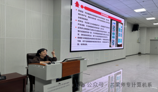

我系开展一系列的讲座教育：
1、10月11日武艳玲老师演讲《消防安全及用电安全教育》知识
2、10月23日薛文宗老师演讲关于《心理健康教育》知识
10月11号，吕梁师范高等专科学校计算机系召开——2024级新生入学教育第一系列《消防安全以及用电安全》讲座。本次讲座主讲人为武艳玲老师。计算机系负责人秦瑞峰、计算机系辅导员参与讲座。讲座开始前，计算机系辅导员崔老师提出倡议：希望新生们能够珍惜这次学习机会，将所学知识运用到日常生活中，切实增强自身的安全防范能力。
发生火灾后，应保持冷静的心态。若发生小火，则尽快扑灭。若火情发展，应迅速判断火源和烟雾的方向，用湿毛巾捂住口鼻，不坐电梯，向反方向逃生。若无法逃生，则迅速关紧迎火门窗，拨打119火警专线、110报警专线，讲清详细地址，把握好双向寻找的方法，等待救缓。
最后，马林校长就本年度进一步提高教师待遇，增加奖励绩效的情况进行了说明。他鼓励教师们担起教书育人的重担，多代课，代好课，助力学生成长成才。他坚信，只要全校师生上下同心同德，吕梁师范高等专科学校一定会在教育改革的浪潮中，谱写出属于自己的华丽新篇。此次会议明确了前行的道路，坚定了教师们的信念，并为计算机系全体成员注入了鲜活的能量。我们将齐心协力，并肩前行，致力于推动我校教育事业迈向更高质量的发展阶段，贡献出我们应有的力量。
本次讲座在同学们热烈掌声中结束。感谢武艳玲老师，让计算机系学子们懂得了如何规范用电行为，学会了发生火灾后的逃生方法，提高了对消防安全及用电安全的重视。每一个人都必须吸取案例中的惨痛教训，增强自我消防安全和用电意识，这不仅是对自我安全的负责与保障，更是对他人生命的尊重与珍视，让我们一起创造一个安全稳定、文明健康的和谐校园吧!